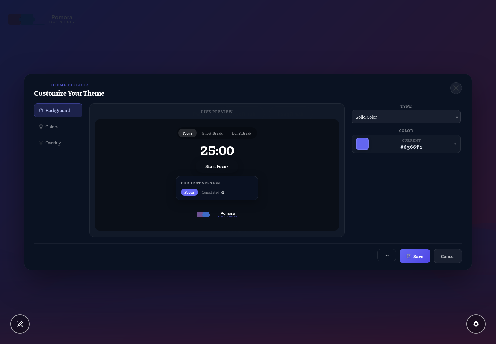
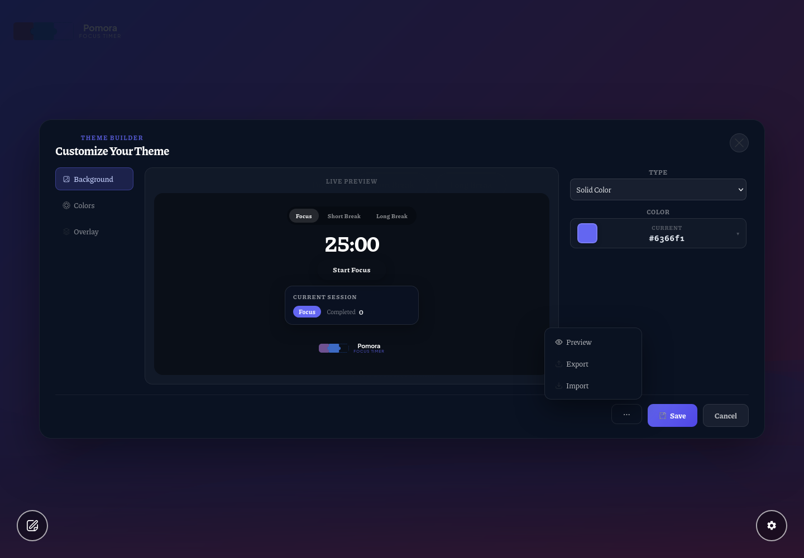
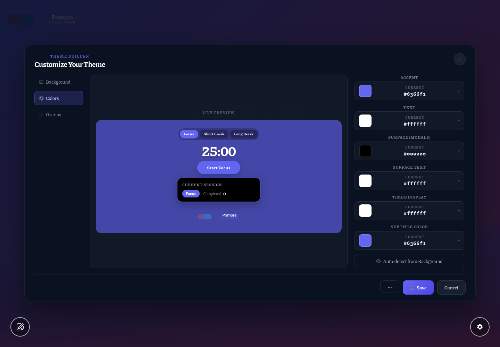
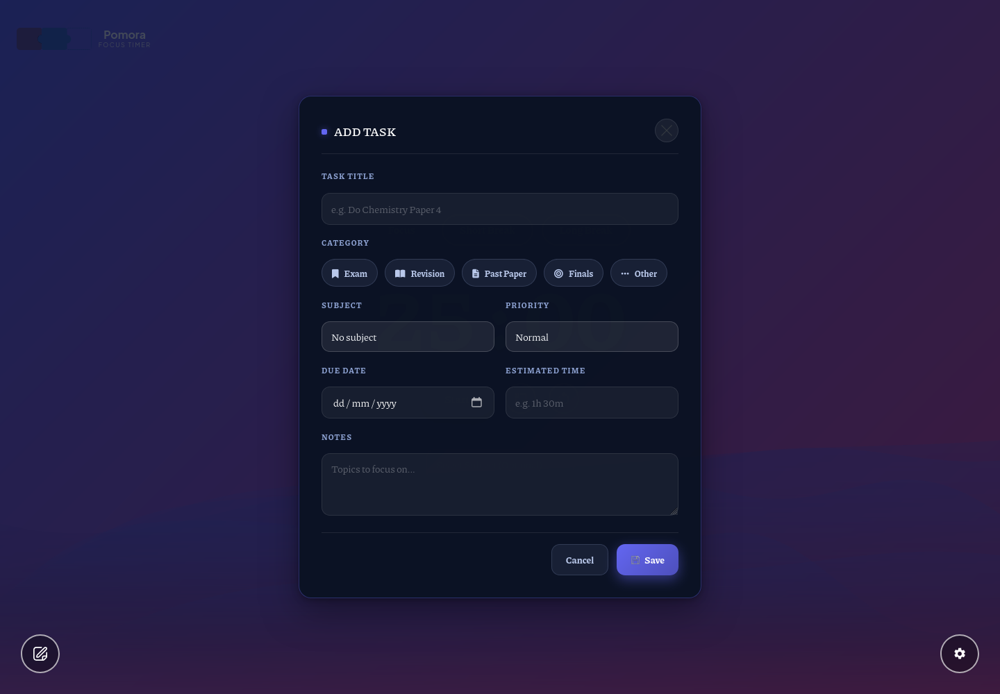
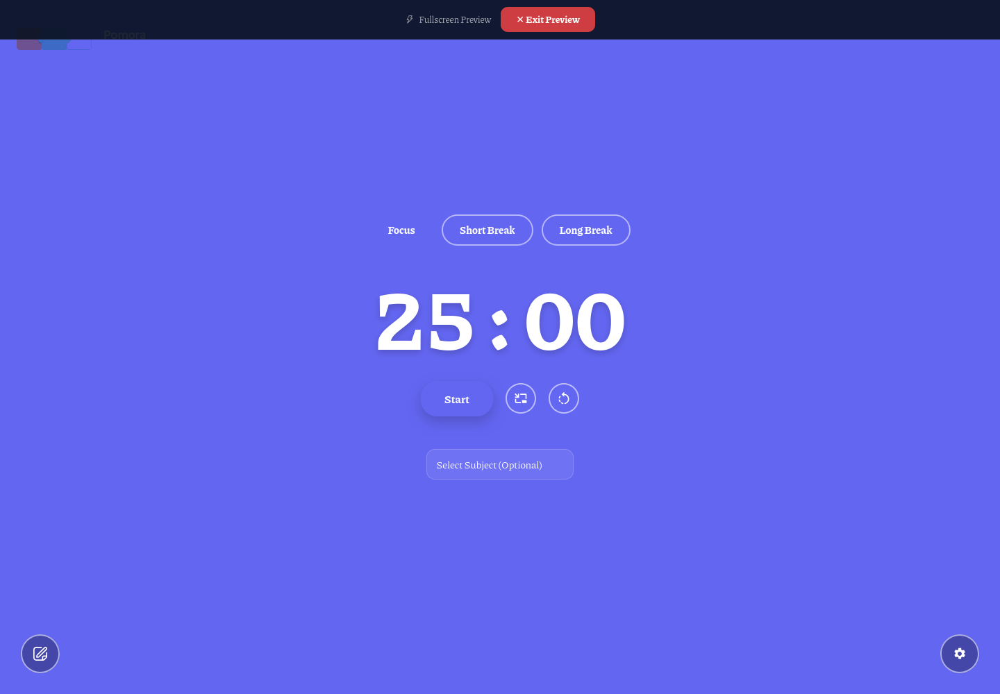
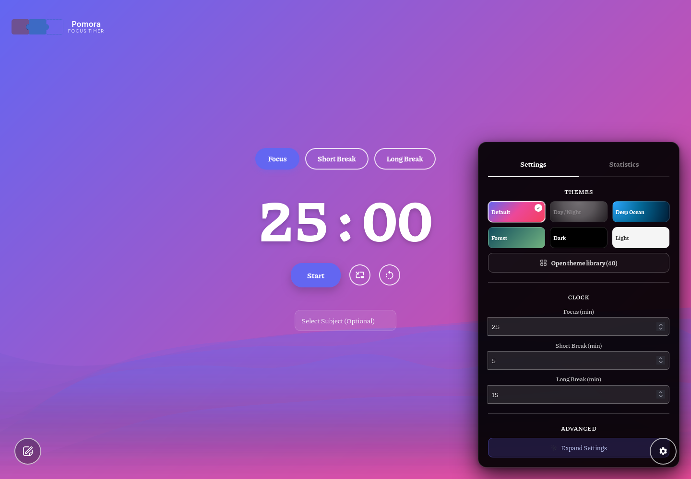
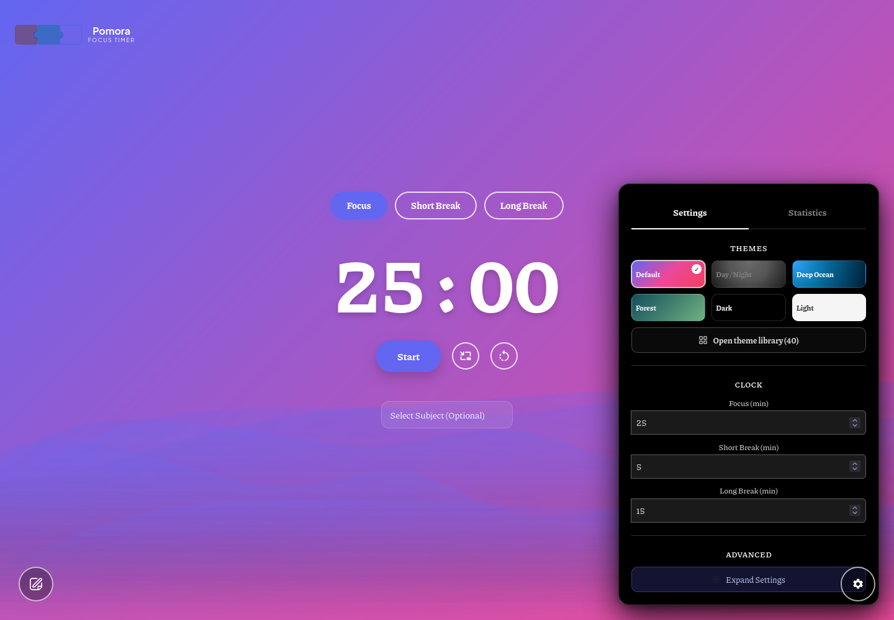
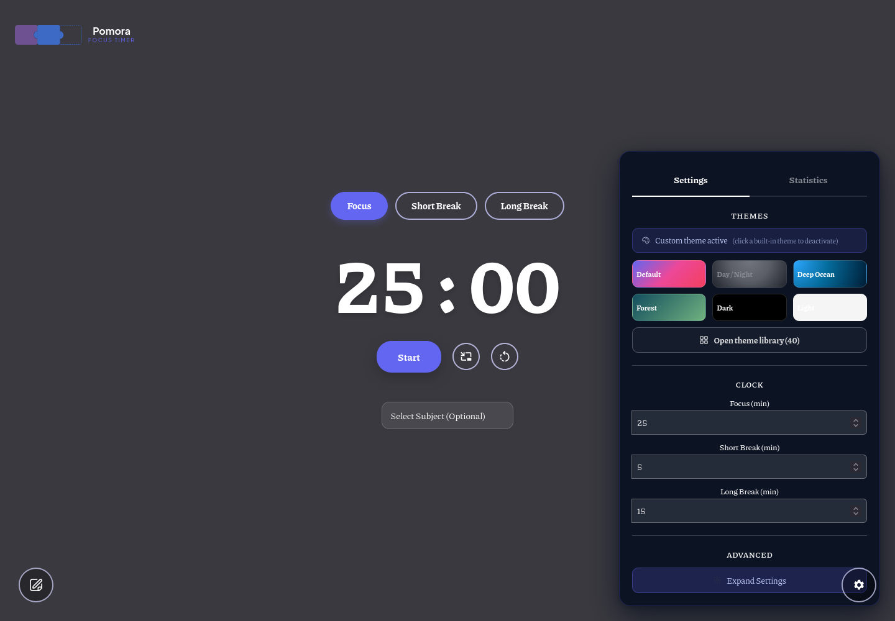

| Editor — tabs / Save / auto-detect | BEFORE (placeholders) |
 AFTER (icons8) |
| Footer menu — Preview (eye) | BEFORE (placeholders) |
 AFTER (icons8) |
| Colors tab — wheel | BEFORE (placeholders) |
 AFTER (icons8) |
| Task popup — Save | n/a BEFORE (placeholders) |
 AFTER (icons8) |
| Exit bar — bolt | n/a BEFORE (placeholders) |
 AFTER (icons8) |
| Row menu — Rename pencil |  BEFORE (placeholders) |
 AFTER (icons8) |
| Badge — palette | n/a BEFORE (placeholders) |
 AFTER (icons8) |